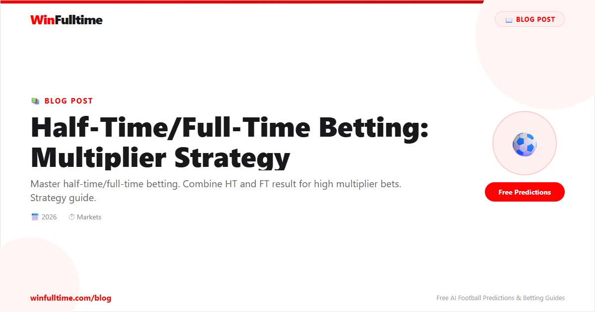

HT/FT combines half-time and full-time results into one bet. Odds from 5.00 to 30.00. High rewards for predicting match flow.
HT/FT is one of the most profitable markets for bettors who understand match flow and team tendencies. The key is identifying matches where you can predict how the game will develop, not just who will win.
There are nine possible HT/FT combinations:
Draw/Home: Often the most profitable HT/FT selection. It works best when a strong home team faces a decent opponent but tends to start slowly. Look for teams that have drawn at half-time in 30%+ of their home matches but have a high second-half scoring rate.
Home/Home: The safest HT/FT selection but with shorter odds. Use this when a dominant home team faces a weak away side that concedes early. Check both teams' first-half scoring records.
Away/Away: Use this when a top team travels to face a struggling side. The away team should have a strong first-half record and the home team should have a poor defensive record.
First-half scoring patterns: This is the most important factor. Check how often each team scores and concedes in the first half. Teams that score early and teams that concede early are the building blocks of HT/FT betting.
Lead protection: How well does each team protect a lead? Teams that consistently hold half-time leads are strong Home/Home or Away/Away candidates. Teams that frequently surrender leads are ideal for Draw/Home or Draw/Away selections.
Motivation and fatigue: Late-season matches, midweek fixtures, and congested schedules all impact HT/FT patterns. Tired teams tend to fade in the second half, making them good candidates for Home/Draw or Away/Draw selections. For more on fatigue analysis, see our fixture congestion betting guide.
HT/FT bets are high-odds, low-probability selections. This means you should stake conservatively - never more than 1-2% of your bankroll on a single HT/FT bet. The long-term edge comes from identifying value at the right odds, not from staking aggressively. Keep detailed records of your HT/FT bets and review them monthly to identify which combinations are most profitable.
Try HT/FT at William Hill for competitive odds.
Catch live matches as they happen. Get golden tips and in-play alerts.
In-Play TipsGenerate optimized accumulator combinations from today's AI-powered predictions. Set your target odds and get instant ticket suggestions.
Free Ticket Builder →18+ Only • Please Gamble Responsibly
All content on WinFulltime is for informational and entertainment purposes only. Betting involves financial risk. If you or someone you know has a gambling problem, please seek professional help.